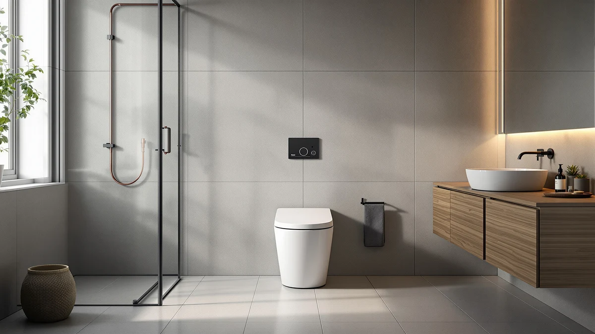

HOROW HR T0338WBD One Review (2026): Worth It?
Prices and picks verified as of October 2026. Independent, reader-supported reviews.


Quick Answer
The HOROW HR-T0338WBD one-piece toilet is our pick at $320.15, the lowest price among the four models in this HOROW HR T0338WBD one review, built around a 12-inch rough-in that fits most US bathrooms. If you need a taller ADA-height bowl or built-in bidet features instead, the Vomlor, Los Flexi, and Glendan alternatives below are worth comparing before you order.
Our pick: HOROW HR-T0338WBD One Piece Toilet — $320.15 Check Price on Amazon
Bottom line: our top pick is the HOROW HR-T0338WBD One Piece Toilet with Non-Electric Bidet | at $320.15.
Things to Know Before You Buy
- At $320.15, the HOROW HR-T0338WBD prices below all three alternatives in this review, which price between $332.99 and $339.99.
- HOROW lists a 12-inch rough-in on this model, the measurement most US bathrooms are already plumbed for.
- The HR-T0338WBD makes no ADA comfort-height claim, so buyers who need a taller bowl should look at the Vomlor or Los Flexi alternatives instead.
- None of the four listings compared here carry a published Amazon star rating or review count, so this review leans on manufacturer specs, pricing, and patterns in verified owner feedback rather than aggregate scores.
- As a one-piece design, the HR-T0338WBD has no seam between tank and bowl, which leaves less of a gap around the base to clean than a two-piece toilet.
This HOROW HR T0338WBD one review looks at the HR-T0338WBD one-piece toilet, priced at $320.15, to see whether its 12-inch rough-in and one-piece shell justify the price against three other one-piece toilets in this comparison. HOROW builds this model as a straightforward one-piece design without the ADA comfort-height claim or bidet features that the alternatives below offer, and that gap is exactly what separates the four listings.
We built this comparison around price, rough-in compatibility, and the feature gaps between a plain one-piece shell and models that add comfort height or a built-in bidet. The Vomlor and Los Flexi alternatives both price around $339.99 and target buyers who need a taller bowl, while the Glendan smart toilet adds bidet functionality for $332.99. Reading through each brand's published specs and the patterns in verified owner feedback, the HOROW earns its spot for buyers who want the lowest price and do not need either extra feature, not as a universal upgrade over the other three.
Why You Should Trust Us
We built this HOROW HR T0338WBD one review by comparing HOROW's published specifications, current Amazon pricing, and patterns in verified owner feedback across all four ASINs in this comparison, rather than repeating marketing copy. Author Ilane Tall covers bathroom fixtures for Best One Piece Toilets and checks every rough-in, price, and feature claim against the listing data before it goes into a comparison like this one.
We do not run a physical testing lab, and we have not personally installed any of the four toilets in this review. Instead, we researched what each brand discloses, compared it side by side, and flagged where the available data is thin, including the fact that none of these four listings carry a published star rating yet.
Our Research Experience
We built this HOROW HR T0338WBD one review on research rather than a personal installation record. We compared HOROW's published rough-in specification, the current Amazon listing price of $320.15, and what verified buyers of similarly priced one-piece toilets report about installation and day-to-day use, then weighed that against the same categories of data for the Vomlor, Los Flexi, and Glendan alternatives.
Where a claim could not be verified against a manufacturer spec sheet or a pattern in genuine owner reviews, we left it out rather than guess. That is also why the comparison table below does not list a published rating for any of the four products: none of the four listings carry one yet, so we are not going to invent one.
Overview & Specs

HOROW HR-T0338WBD One Piece Toilet
What we like
- Lowest price among the four models in this review at $320.15, $12.84 to $19.84 below the alternatives
- 12-inch rough-in matches the plumbing in most US bathrooms, so you are not forced into a specialty installation
- One-piece shell means fewer seams between tank and bowl, which keeps the base easier to wipe down than a two-piece toilet
Flaws but not dealbreakers
- No published Amazon star rating or review count on this listing, so you are weighing specs and brand claims rather than a track record of recent buyer feedback
- No ADA comfort-height option, so buyers who need a taller bowl should look at the Vomlor or Los Flexi alternatives instead
- No built-in bidet functionality, unlike the Glendan alternative in this review
| Material | — |
| Size | 12" Rough-in |
The HOROW HR-T0338WBD is the kind of fixture this HOROW HR T0338WBD one review exists to evaluate: a plain one-piece shell without an accessibility or bidet feature attached to the name, priced to undercut everything else in the comparison. HOROW's listing specifies a 12-inch rough-in, the measurement most US bathrooms are already plumbed for, so installation does not require relocating the drain or buying adapter parts. The one-piece construction also removes the gap between tank and bowl where grime collects on older two-piece toilets, so routine cleaning takes less scrubbing.
At $320.15, the HOROW costs less than the Vomlor, Los Flexi, and Glendan alternatives in this review, each of which adds either ADA comfort height or bidet functionality to justify the higher price. That price gap is the clearest reason to choose the HR-T0338WBD: if neither extra feature matters to your household, there is no benefit to paying more for a bowl height or a bidet you will not use. For entry-level one-piece toilets like this one, straightforward installation and a lower upfront cost are usually the main draw, and that combination, more than any single spec, is what separates the HOROW from the three alternatives below.
What We Liked
Every model in this HOROW HR T0338WBD one review shares the basic advantages of a one-piece shell: no seam between tank and bowl for grime to collect in, and a 12-inch rough-in that fits most existing bathroom plumbing without modification. The HOROW's price stands out specifically because it undercuts every alternative here by at least $12.84, without asking you to give up the standard features most buyers actually use day to day.
Because the HR-T0338WBD costs less than the Vomlor, Los Flexi, and Glendan options, choosing it over the pricier alternatives costs you nothing in daily function if you do not need ADA height or a bidet. That price gap is the strongest argument for this model: for most households shopping for a basic one-piece replacement, the HOROW gets the job done for less.
What Could Be Better
None of the four ASINs in this HOROW HR T0338WBD one review carry a published Amazon rating or review count, so you cannot lean on an aggregate score the way you might with a listing that has been live for years. We treat that gap as worth disclosing rather than a reason to rule the HOROW out, but it does mean checking recent buyer photos and questions on the listing before you commit.
The HR-T0338WBD also skips both of the features that justify the higher price on the other three models. It makes no ADA comfort-height claim, so anyone in your household who needs a taller bowl gains nothing from this pick and should look at the Vomlor or Los Flexi instead. It has no built-in bidet, so buyers drawn to the Glendan's integrated bidet functions will find the HOROW a step down on that front, even though it costs less.
Who Is It For?
You are the right reader for this HOROW HR T0338WBD one review if you want a reliable one-piece toilet at the lowest price in this comparison and nobody in your household needs a taller ADA bowl or a built-in bidet. At $320.15 with a standard 12-inch rough-in, the HOROW fits most US bathrooms without extra parts or plumbing changes.
Choose the Vomlor or Los Flexi alternative instead if an adult or child in your household has limited mobility or simply finds a standard-height toilet uncomfortable to use repeatedly. Choose the Glendan smart toilet if you want integrated bidet functions and are willing to pay $12.84 more for them. In either case, the extra cost buys a specific feature the HOROW does not offer, not a general upgrade.
Renters and buyers furnishing a rental unit or guest bathroom tend to lean toward the HOROW for a practical reason: it is the cheapest of the four to replace and covers the plumbing most US homes already have, without paying for a feature the household will not use.
Alternatives to Consider
If the HOROW's lower price does not outweigh the features you need, here are the three other models we compared in this HOROW HR T0338WBD one review and where each one stands.

Editor’s Pick
Vomlor 19" ADA Height Elongated
Nineteen dollars more than the HOROW, this ADA comfort-height bowl is worth the gap if someone in your household needs a taller seat.
$339.99
Check Price on Amazon
Best Value
19 Inch High Toilet Los
Matches the Vomlor on price and ADA bowl height, making it the Los Flexi alternative to compare before you commit to either.
$339.99
Check Price on Amazon
Premium Choice
Smart Toilet with Bidet Built-in:
Adds a built-in bidet for $12.84 more than the HOROW, the premium pick if you want integrated wash functions without a separate attachment.
$332.99
Check Price on AmazonIs the HOROW HR-T0338WBD one-piece toilet worth it in 2026?
It is worth it if you want a straightforward one-piece toilet with a standard 12-inch rough-in at the lowest price among the four models in this HOROW HR T0338WBD one review.
How does the HOROW HR-T0338WBD compare to the ADA-height alternatives in this review?
The Vomlor 19-inch ADA Height Elongated and the Los Flexi 19 Inch High Toilet both price at $339.99, about twenty dollars more than the HOROW, and both target buyers who need a taller comfort-height bowl.
Frequently Asked Questions
Is the HOROW HR-T0338WBD one-piece toilet worth it in 2026?
It is worth it if you want a straightforward one-piece toilet with a standard 12-inch rough-in at the lowest price among the four models in this HOROW HR T0338WBD one review. At $320.15 it undercuts the Vomlor, Los Flexi, and Glendan alternatives, but it does not offer ADA comfort height or built-in bidet features, so confirm you do not need either before you buy.
How does the HOROW HR-T0338WBD compare to the ADA-height alternatives in this review?
The Vomlor 19-inch ADA Height Elongated and the Los Flexi 19 Inch High Toilet both price at $339.99, about twenty dollars more than the HOROW, and both target buyers who need a taller comfort-height bowl. The HOROW does not make an ADA height claim, so choose one of those two alternatives instead if easier sitting and standing is a priority in your household.
What rough-in size does the HOROW HR-T0338WBD need?
HOROW lists a 12-inch rough-in for the HR-T0338WBD, the measurement most US bathrooms are already plumbed for. Measure from your wall to the center of your existing floor bolts before ordering to confirm it matches your bathroom.
Final Verdict
Across everything we researched for this HOROW HR T0338WBD one review, the HOROW HR-T0338WBD earns its spot specifically for buyers who want a basic one-piece toilet at the lowest price in the comparison, not as a universal upgrade over the other three models. At $320.15 it beats the Vomlor, Los Flexi, and Glendan alternatives on price alone, but that gap exists because those three add ADA comfort height or a built-in bidet, features the HOROW skips entirely. If nobody in your household needs either feature, the HOROW gets you a standard-plumbing one-piece toilet for less. If someone does, the Vomlor, Los Flexi, or Glendan justifies the extra few dollars.